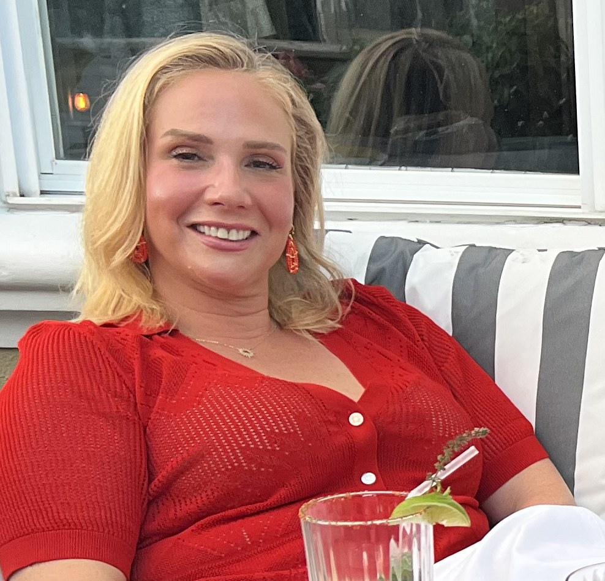

Touch to wiggle
Adrian TuberoThe Sister · The Soles · The Peace Sign
- ArchCathedral-grade
- PedicureCoral Reef, freshly applied
- Signature moveFeet on the pillow, feet on the table, feet on Adam
- Wiggle factorExtremely high
- Preferred surfaceWhatever cushion is closest
- Toe countTen. We checked twice.
Big toe · CSecond · DMiddle · EFourth · GPinky · A